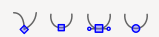
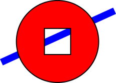

Section C.2
Inkscape: A 2D Drawing Program
This section is a very brief introduction to Inkscape, a free program for creating and editing 2D vector graphics images. I used Inkscape to create many of the illustrations for this textbook. As a vector graphics program, instead of storing colors of pixels, Inkskape stores a list of the objects in a scene, together with their attributes. It saves images in the SVG (Scalable Vector Graphics) format, which is covered in Section 2.7. SVG images can be opened in many standard image viewers and can be used on the Web. Inkscape adds some extra data to the SVG files that it creates, but that data will be ignored by other programs.
Inkscape can be downloaded from its web site at inkscape.org. It is available for Windows, Mac OS, and Linux. The latest version as of July, 2023 is 1.3. This section was written based on Inkscape 1.1, but it is still valid for version 1.3.
The Inkscape window has a large central drawing area, with several toolbars around the edges. Many dialog boxes, such as the one for setting stroke and fill properties, will open along the right edge of the window. The layout is configurable. For example, toolbars can be hidden, and dialog boxes can be moved out of the main window to become independent windows. My discussion assumes the standard layout.
When a new window is opened, the drawing area probably shows a scaled-down view. I prefer to work with a full size drawing, so the first thing I usually do is hit the "1" key to get an unscaled view. For detailed work, magnified views are also useful. You can zoom in by typing "+" and zoom out by typing "-". There is also a "Zoom" submenu in the "View" menu.
A toolbar that contains the Inkscape drawing tools runs along the left edge of the window. You might not see exactly the same set of tools that is shown here, depending the Inkscape version that you are using. The tools that you are most likely to use are labeled in this illustration:

You can also get a description of a tool by hovering your mouse over its icon. (The same is true for most interface elements.) It's a good idea to learn some of the keyboard equivalents, such as F1 or S for the select tool.
The drawing tools, which create shapes, are the Rectangle, Ellipse, Star/Polygon, Spiral, Bezier, and Text tools. After selecting those tools, you can use the mouse to add a shape to the image. For the most part, the tools are easy to use, but some of them are discussed in more detail below.
The Select tool is fundamental. It is used to select shapes for editing and to move selected shapes. It is only useful after you've drawn some items. Click on an item with the Select tool to select it. Select multiple items by dragging a box around them with the Select tool. You can also add items to the selection by shift-clicking them, or by shift-dragging around a group of items.
When multiple items are selected, you can manipulate them as a group. For example, you can use the Select tool to drag the group to a new position, or you can resize the group as a whole. You can use the "Group" command in the "Object" menu to permanently group the selected items into a compound item; you can break up a compound item using the "Ungroup" command. The "Group" command allows you to do hierarchical graphics (Section 2.4); that is, you can group compound objects into higher level compound objects.
When you select an item, or group of items, handles appear around the item. You can drag the handles to transform the selection. Hold down the control key to constrain the transformation. For example, when resizing an item, holding down the control key will preserve the aspect ratio of the shape. There are actually two sets of handles, as well as the possibility of modifying the shape by dragging "control points." Using a rectangle as an example:
For a rectangle, the small round control points can be dragged to make rounded corners. The control points also appear when you first draw the shape. To make them go away, you can switch to the Select Tool.
A shape in Inkscape can be stroked and/or filled. There is a dialog box for setting stroke and fill properties, which you can open by selecting "Fill and Stroke" from the "Object" menu. The dialog box applies to the currently selected object or objects. It has tabs for setting the stroke color and the fill color. There is also a "Stroke Style" tab, where you can set the stroke width and other attributes. There is a shortcut for setting colors, using the "Color Palette" near the bottom of the window:

The status bar under the color palette, as shown in the illustration, contains information about the currently selected shape and the currently selected tool. You can learn a lot about how to use Inkscape by paying attention to the help text in this status bar!
Above the drawing area, you can find a tool options bar, whose content changes depending on which tool is selected. In the options for the Select Tool, for example, you'll find some icons for rotating and flipping the current selection, and for raising or lowering the selection (to move it in front of or behind other shapes). Hover your mouse over an icon to find out what it does. Again, paying attention to the options toolbar can help you learn how to use Inkscape! Here, for example, is part of the Star/Polygon tool options bar, which appears when the Star/Polygon tool is being used and applies to the star/polygon shape that is being edited:
As you can probably see, it's not possible to use this tool effectively unless you are aware of its options and how to change them. Without using the options, you can't even change a shape from the default star-shape into a polygon. The Star/Polygon tool can produce a wide variety of interesting shapes by changing the "Rounded" and "Randomized" options.
The most versatile shape tool is the Bezier tool, which lets you draw straight lines, polygonal paths, and Bezier curves. For a straight line segment, click at the first endpoint of the line, then double-click at the second endpoint. For a polygonal path, just click on a series of points and double-click the final point. Inkscape refers to the endpoints and vertices of the path as "nodes." For a more general curved shape, I have found it easiest to start with a polygonal shape, which can then be edited to turn the straight sides into curves.
Once you have the polygonal path, switch to the Control Point Editing Tool (F2 or N key) to modify the shape. (You might need to click a shape to begin editing it.) With that tool, you can drag the middle of a line segment to make it into a curve. You can also drag the path's nodes. When you click the node at an end of a curved segment, handles will appear, and you can drag the control points at the ends of the handles to adjust the shape. (This is all very much like editing Bezier paths in Gimp.) You should note these four button icons in the tool options bar for the Control Point Editing Tool:

Click one of these buttons while a node is selected to set how the handles for that node work. The left button allows you to freely adjust the two handles separately. This is the default setting. With that setting, you can get a sharp point or corner. The second button forces the control points and the node to lie on a line, giving a shape that is smooth at that node. The third button makes an even smoother shape by forcing the two control handles to have the same length.
Hopefully, I have given you enough information to get you started with Inkscape. There is a lot more to learn. I will mention just a few more features.
The "Symbols" command in the "Object" menu will open a dialog box, on the right side of the window, with several sets of "symbols" that can be added to an image. A symbol in Inkscape is just a predefined image. For example, there is a set of "Word Balloons" and a set of "Logic symbols" for use in circuit diagrams. A popup menu in the dialog box selects the symbol set. (Note that the default selection in that popup menu will probably no symbols at all.) You can drag an image from a symbol set into the drawing area of the window. Once it's part of the drawing, you can resize and edit it just like other shapes. Remember that one of the advantages of vector graphics is that shapes can be resized without any loss of quality, so you get nice looking symbols at any size! Also, in general, you can change the stroke and fill properties of a symbol.
In fact, you can add arbitrary images to the scene, using the "Import" command in the "File" menu. You can also simply drag an image onto the Inkscape window to add it to the scene. Once an image is part of the scene, it can be scaled and rotated just like any other object.
Here's an example of a shape that you can make as a "difference" of two shapes. For this shape, a square was subtracted from a circle. I added a blue rectangle behind the shape so that you can see that there's actually a square hole in the circle, not simply a white square on top of a red circle:

"Difference" is one of several commands in the "Path" menu for combining two shapes in various ways. Other operations include "Union", "Intersection", "Exclusion", and "Division". (Division can be used to cut a shape into two independent pieces.)
Here is how to make the circle-minus-square shape, including a few notes about new techniques: Draw a square inside a circle. To get perfect circles and squares instead of ovals and rectangles, hold down the control key while creating the shape. To align the two shapes so that the square is perfectly centered in the circle, select both shapes and use the "Align and Distribute" command in the "Object" menu; this will bring up a dialog box containing icons that you can click to align and distribute the selected objects in various ways. Finally, to subtract one shape from the other, select both shapes and use the "Difference" command in the "Path" menu. Note that the upper shape is subtracted from the lower, which means that you should draw the square after you draw the circle. You can set the stroke and fill properties of the combined shape. Filling the shape should fill the region between the square and the circle, as shown in the picture. If you draw a blue rectangle at this point, it will be on top of the circle/square shape. To move it under the shape, select the rectangle and use the "Lower" command from the "Object" menu.
One last suggestion: You might want to investigate some of the many commands in the "Filters" and "Extensions" menu. It's interesting that you can apply a blur filter to a shape, and still edit the properties of the shape. (The filter is stored as an attribute in the SVG file and is applied whenever the shape is rendered.)